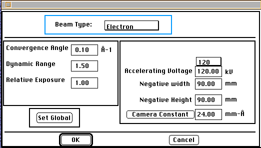

Beam:Definition:Tutorial
The next step after defining the orientation
relationship necessary for obtaining a desired diffraction pattern is
setting the beam parameters. The beam parameters allow control of the particle
type (electron, x-ray or ion), the wavelength (Accelerating Voltage), the
camera constant (distance sample is from imaging plane), the convergence
angle of the beam, the film sensitivity (dynamic range) and the exposure
time (relative exposure).

Microscope Information Dialog Box
The current example uses the default values for the electron beam. Go to
the Parameter menu and select the Define Beam Menu Item. This action will
bring up the Define Beam Dialog Box.
Make sure the beam type is Electron. Note the Accelerating Voltage is
120 kV, the dynamic range is 1.5, and the camera constant is 24 mm-Å.
Go ahead and close the dialog box.
Note:
Beam type is automatically selected upon entering each of the separate objects.
Therefore, x-ray objects always default to the default definition of the
x-ray beam and electron objects to the default electron beam.
Once in an object a different particle type may be selected. However, care
must be taken to insure that the calculation will provide useful results
in a reasonable time frame.
Example:
Desktop Microscopist will calculate a diffractometer plot for electrons,
however the diffracting angle of the electron is much smaller than that
for an x-ray. Therefore, the user needs to severely limit the 2 theta range!
Author:James T. Stanley J.
Stanley
 Desktop
Manual
Desktop
Manual
Distributed By: Virtual
Labs
Last Updated:1/12/96 Sat, Apr 27, 1996